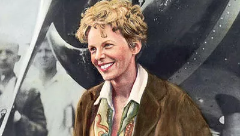

<div class="w3-container" style="padding: 20px; max-width: 800px; margin: auto;">
   <div class="w3-row zonta-p-container">
      <div class="w3-col s12" style="text-align: center">
         <h1>United Nations</h1>
      </div><br />
      <div style="margin-top: 40px;">
         <!-- <div class="w3-col m6 s12">
            
         </div>
         <div class="w3-col m6 s12" style="text-align: center;">
            <h3>Amelia Earhart Fellowship</h3>
            <p>Deadline: November</p>
            <p>For information and application</p>
            <button type="button" mdbBtn mdbWavesEffect class="w3-round-xlarge zonta-red"
            onclick="window.open('https://foundation.zonta.org/Our-Programs/Educational-Programs/Amelia-Earhart-Fellowship')">
               Click Here
            </button>
         </div><br /><br /> -->
         <div class="w3-col s12" style="margin-top: 20px;">
            <h3>UN Partner Since 1945</h3>
            <p>
               Cooperation with the United Nations (UN) started in 1945 when the UN was founded. 
               Zonta International has General Consultative Status with the UN/ECOSOC since 1969.
            </p>
         </div>
      </div>
      <div style="margin-top: 40px;">
         <!-- <div class="w3-col m6 s12 w3-hide-large w3-hide-medium">
            
         </div>
         <div class="w3-col m6 s12" style="text-align: center;">
            <h3>Jane M. Klausman Women in Business Scholarship</h3>
            <p>Deadline: May 15</p>
            <p>For information and application</p>
            <button type="button" mdbBtn mdbWavesEffect class="w3-round-xlarge zonta-red"
            onclick="window.open('https://foundation.zonta.org/Our-Programs/Educational-Programs/Jane-M-Klausman-Women-in-Business-Scholarship')">
               Click Here
            </button>
         </div>
         <div class="w3-col m6 s12 w3-hide-small">
            
         </div><br /><br /> -->
         <div class="w3-col s12">
            <h3>Supporting UN Projects</h3>
            <p>Zonta International’s service and advocacy activities focus on:</p>
            <ul>
               <li>
                  <strong>International Service Projects:</strong> Since Zonta International was founded in 1919, Zontians have been 
                  passionate about empowering women in developing countries through international service. To learn more, 
                  <a href="https://foundation.zonta.org/Our-Programs/International-Service-Program" target="_blank">click here.</a>
               </li>
               <li>
                  <strong>Zonta International Strategies to end Violence Against Women (ZISVAW):</strong> 
                  A program since 1996 to eliminate violence against women.
               </li>
               <li>
                  <strong>Education and Leadership Development Programs:</strong> Awards, fellowships, and scholarships for young 
                  women in public affairs for women pursuing high academic degrees in aerospace-related sciences and for women in business.
               </li>
            </ul>
         </div>
      </div><br />
      <div style="margin-top: 30px;">
         <!-- <div class="w3-col m6 s12">
            
         </div>
         <div class="w3-col m6 s12" style="text-align: center;">
            <h3>Young Women in Public Affairs Award</h3>
            <p>Deadline: Februrary 28</p>
            <p>For information and application</p>
            <button type="button" mdbBtn mdbWavesEffect class="w3-round-xlarge zonta-red"
            onclick="window.open('https://foundation.zonta.org/Our-Programs/Educational-Programs/Young-Women-in-Public-Affairs-Award')">
               Click Here
            </button>
         </div><br /><br /> -->
         <div class="w3-col s12" style="margin-top: 20px;">
            <h3>Council of Europe</h3>
            <p>
               Zonta International has been represented at the Council of Europe since 1983 and 
               since 2002 has enjoyed participatory status.
            </p>
            <p>
               As a member of the Conference of International NGOs, Zonta International advocates for and 
               contributes to the elaboration of treaties related to gender equality and women’s human rights, 
               thus Zonta participates in the work of the Council of Europe institutions.
            </p>
            <p>
               Zonta provided major input to the content and wording of the convention on violence against women, the ”Istanbul Convention”.
            </p>
         </div>
      </div><br />
   </div>
</div>
